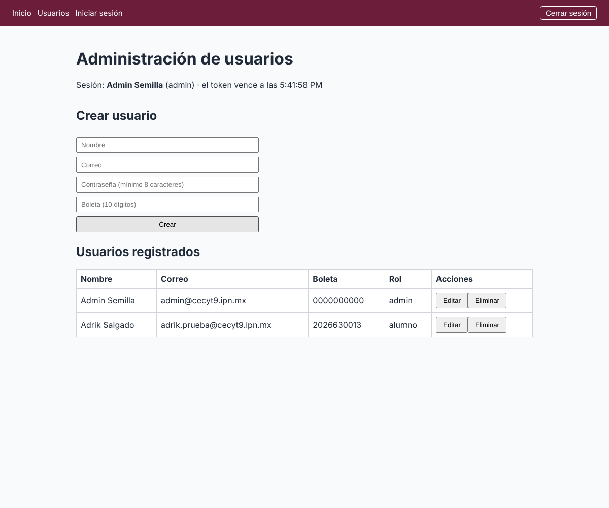
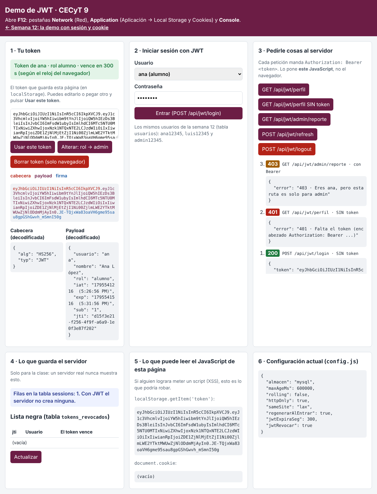

Qué se hizo
-
Demo guiada «De la sesión al JWT» (
demo-jwt/): pasos 1 a 7 programados enapp.jsymodelos/tokens.modelo.js:firmarToken(HS256,sub,jti,exp),requiereJWT(401 sin token / inválido / expirado / revocado),requiereRolJWT(403),POST /api/jwt/refreshy lista negra entokens_revocados.npm run probar: 41 de 41 pruebas pasaron. -
Integradora (
integradora/): se reemplazó la sesión simple del Parcial 2 por JWT.backend/: Express + MySQL (cecyt9_local).POST /api/loginemite el JWT,middleware/jwt.middleware.jslo verifica y protege todo el CRUD de/api/usuarios(leer: cualquier token válido; crear/editar/borrar: solo admin). Renovación conPOST /api/refresh.npm run probar: 21 de 21 pruebas pasaron.mini-proyecto-next/:pages/login.jsguarda el token,lib/fetchConToken.jslo manda enAuthorizationypages/admin/usuarios.jsusafetchConToken(sincredentials); si la respuesta es 401 borra el token y manda a/login. Si al token le queda menos de 1 minuto lo renueva antes de la petición.
Pruebas manuales de acceso con y sin token (integradora)
Hechas con curl contra http://localhost:3001 (también se pueden hacer en Postman con
Authorization → Bearer Token).
| # | Petición | Token | Resultado |
|---|---|---|---|
| 1 | POST /api/login admin semilla | — | 200 {"token":"eyJhbGciOiJIUzI1NiIs…","usuario":{…}}, sin Set-Cookie |
| 2 | POST /api/login contraseña mala | — | 401 {"error":"Correo o contraseña incorrectos"} |
| 3 | GET /api/usuarios | Sin token | 401 {"error":"Falta el token (encabezado Authorization: Bearer ...)"} |
| 4 | GET /api/usuarios | Válido | 200 [{"id":1,"nombre":"Admin Semilla",…}] (sin contrasena_hash) |
| 5 | GET /api/usuarios | Firma alterada | 401 {"error":"Token inválido"} |
| 6 | GET /api/usuarios | Expirado | 401 {"error":"Token expirado: vuelve a iniciar sesión"} |
| 7 | DELETE /api/usuarios/:id | Válido de alumno | 403 {"error":"Solo admin puede hacer esto"} |
| 8 | POST /api/usuarios | Sin token | 401 (no se crea nada) |
| 9 | POST /api/refresh | Válido | 200 {"token":"eyJ…"} nuevo (otro jti) |
| 10 | Página /admin/usuarios | Sin token o alterado | Redirige a /login y borra el token de localStorage |

Demo: 401 / 403 / 200 con JWT
| Situación | Código | ¿Qué significa? |
|---|---|---|
| Sin token | 401 | No hay token: el servidor no sabe quién eres. |
| Con token de ana | 403 | El token es válido y dice rol alumno: no alcanza para admin. |
| Con token de admin | 200 | Token válido y rol admin dentro del payload. |
requiereJWT va antes que requiereRolJWT: si se invirtieran, alguien sin token
llegaría a leer req.jwt.rol sin que exista (error 500) en lugar de recibir un 401.

Sesión contra JWT
| Pregunta | Sesión (semana 12) | JWT (semana 13) |
|---|---|---|
| ¿Qué guarda el servidor? | Una fila en sessions | Nada (solo el secreto); con lista negra, el jti de los tokens revocados |
| ¿Qué lleva el navegador? | Una cookie con un id firmado | El token completo (cabecera.payload.firma) en localStorage |
| ¿Quién lo manda en cada petición? | El navegador, solo | Nuestro código (Authorization: Bearer) |
| ¿Dónde está el rol? | En el servidor | Dentro del payload, firmado |
| ¿Y si reinicio el servidor? | Depende del almacén | El token sigue sirviendo (sin estado) |
| ¿Cerrar sesión lo invalida? | Sí (destroy) | No, hasta que vence… salvo con lista negra |
| ¿Lo puede leer el JavaScript? | No (httpOnly) | Sí: un XSS podría robarlo |
Filas nuevas para la matriz de riesgos
| Amenaza | Qué lo hace posible | Control |
|---|---|---|
| Robo del token | Quien tiene el token es el usuario; no pide contraseña | Expiración corta (exp), HTTPS, lista negra al cerrar sesión |
| Token alterado (cambiar el rol) | El payload solo va en base64url y se puede editar | Firma HS256 verificada con jwt.verify → 401 «Token inválido» |
| Secreto filtrado | Subir .env a GitHub; con el secreto se fabrican tokens de admin | .env en .gitignore, secreto largo, rotarlo (invalida todos los tokens) |
| Token vivo después del logout | El servidor no guarda nada; el logout solo borra el token del navegador | Lista negra por jti (tokens_revocados) y tokens de vida corta |
XSS que lee localStorage | El token es visible para cualquier script de la página | No usar innerHTML con datos, CSP, o guardar el token en cookie httpOnly |
Ataque alg: none | Librerías que aceptaban tokens sin firma | algorithms: ['HS256'] en jwt.verify |
Preguntas de cierre
- ¿Por qué el payload se puede leer pero no cambiar? Porque solo está codificado en base64url
(no cifrado), pero la firma se calcula sobre la cabecera y el payload con el secreto del servidor. Si cambias
una letra, la firma ya no coincide y
jwt.verifylo rechaza; para volver a firmar hace falta el secreto. - Si a ana le quitan el rol de admin, ¿cuándo se entera su token? En la demo, hasta que vence: el rol va dentro del token. Con el refresh de la demo tampoco, porque copia el rol del token viejo. En la integradora, el refresh vuelve a leer al usuario de la BD, así que el token nuevo ya trae el rol actualizado (y si el usuario fue borrado, el refresh responde 401).
- ¿Qué hace el frontend con un 401? Borra el token de
localStoragey manda a/login, porque el token ya no sirve (falta, está alterado, venció o fue revocado).
Cómo correrlo
# Demo JWT cd "Tercer parcial/Semana13-JWT/demo-jwt" npm install && cp .env.example .env # DB_PASSWORD y JWT_SECRET npm run bd && npm start # http://localhost:4600/jwt.html npm run probar # 41 de 41 # Integradora: backend cd "Tercer parcial/Semana13-JWT/integradora/backend" npm install && cp .env.example .env # DB_PASSWORD y JWT_SECRET mysql -u root -p < schema-completo-mysql.sql npm start # http://localhost:3001 npm run probar # 21 de 21 # Integradora: frontend cd "../mini-proyecto-next" npm install && npm run dev # http://localhost:3000/login # admin@cecyt9.ipn.mx / CambiaEstaClave123